Raytracing
Code for this project can be found here. Requires numpy and PIL (Python Image Library).
Raytracing is a method of generating 3D images using computers. Humans see objects in the world because they reflect light from a light source, such as the sun. The light from the source bounces off the object and into the observer's eye. If we imagine the light from the source as a set of rays, then these "rays" are scattered in all directions in a sphere. The probability that any given ray enters the observer's eye is very small, but there are so many of them that a significant number do enter the eye.
However, when we try to simulate lighting in a 3D environment, this creates a problem. If we simulate many rays (possibly millions) from a light source, for only a few to enter the "camera", the simulation would run extremely slowly. Most of the time spent simulating the rays would be wasted, because the majority would just shoot off to nowhere. Luckily, there is a way around this! We can take advantage of the fact that light rays tend to be "reversible". That is, if a ray travels from the light source, hits an object, and enters an observer's eye, then a ray from the observer's eye to the object will be reflected towards the light source.
Because of this, we can cast rays from the observer's eye and look at the objects they hit in order to render what the observer sees. We can also check if the points on the object can "see" the light source. If they can, we can shade them appropriately. If not, we should colour that part of the object black.
This can be achieved in Python by having a "screen" of points and a "viewpoint" (the observer's eye) behind the screen. We cast primary rays from the viewpoint to each point of the screen, then see what each ray hits to determine the colour of each pixel on the screen. This is shown in the diagram below (top-down):
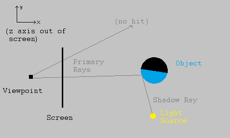We can see that the primary ray at the top hit nothing, so we should colour in this pixel with a "background" colour, such as grey. However, the primary ray at the bottom hit an object. Drawing another ray from that part of the object to the light source, that point can "see" the light, so we should colour that pixel on the screen with the object's colour (shaded depending on the angle to the light source). If the ray had hit a part of the object that could not see the light source, the corresponding pixel on the screen would have been coloured black.
As a simple way to shade the object, we can assume that the object's material reflects light diffusively - it scatters the light in all directions, like rubber or wood would do. It also makes sense that parts of the object at a low angle to the light source would appear brighter, while parts that are more angled away would be dimmer.
Aiming at this, let S be the unit vector pointing from the object's surface to the light source, and let N be the unit normal vector to the object surface at that point. This normal can usually be found using calculus. To shade the object at this point, we can multiply its colour vector (a vector with red, blue, and green channels) by the dot product of S and N. That is, the colour of a pixel "looking at" a particular point P is given by:
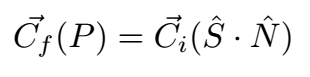where Ci is the colour of the object's surface and Cf is the colour applied to the pixel. Note that these are 3-vectors since there are 3 primary colour channels.
First Results
Implementing this simple model in Python, and using it to render a sphere, gives us an image:
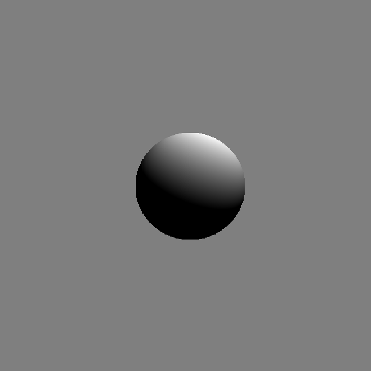This sphere shows the model in action. The points that face "towards" the source are brightly lit, but the points around the edge of the lit area are quite dark since they are angled away from the source. Finally, points that cannot see the light source are not lit at all. One notable limitation of using this method to render objects is that it is necessary to calculate where a ray intersects an object. For spheres this is easy - it amounts to solving a quadratic equation. For even simple shapes like cubes, though, it is a lot more complex. One way to render a cube is to consider the cube as the intersection of six planes, with normal vectors pointing outwards. This allows us to know whether a point is "inside" a plane. We can then calculate the intersection of a ray with each plane of the cube, but only render the intersection if the point is inside every other plane of the cube. However, this takes a long time to simulate. So for the purposes of this project, I decided to keep using just spheres and single planes for the time being.
Despite the simplicity forced by using only spheres, some interesting images can be rendered. For example, we can show how solar eclipses work:
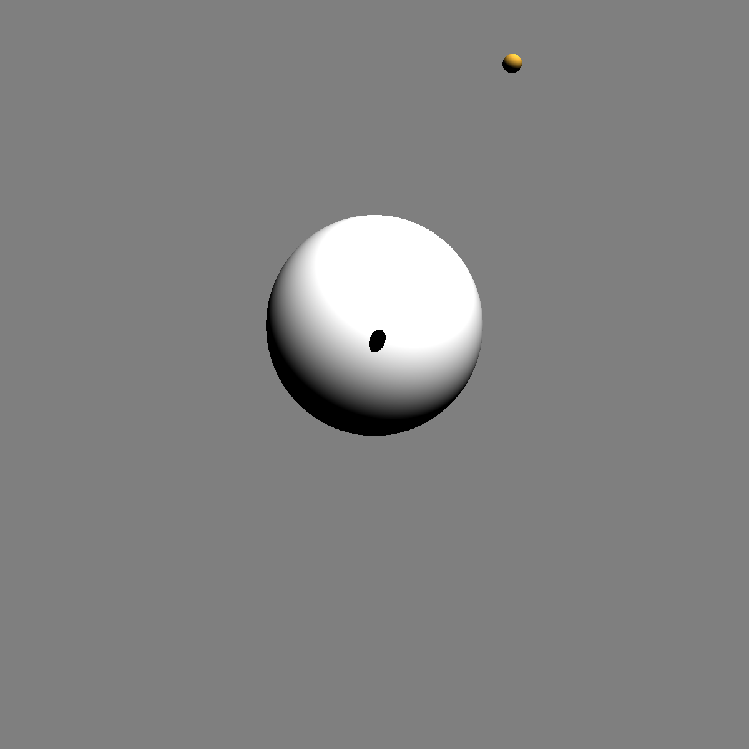Or build snowmen:
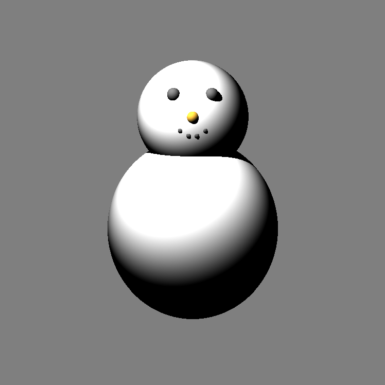Specularity
The images above were generated assuming that all of the spheres were made of a diffuse material - they scatter light in all directions. However, we can also simulate specularity - the tendency for objects to reflect light in straight lines.
This would cause a sharp "highlight" to appear on the spheres, to show where the light source is coming from. To model specularity, we can see where a ray from the light source *would* go when reflected from the object, and get the dot product of that reflection with the vector towards the viewpoint.
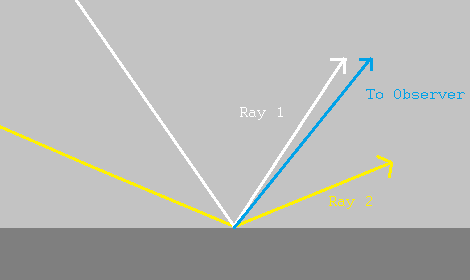
In the image, the white ray (ray 1) is much closer to the viewer's direction than the yellow ray (ray 2). This means that the dot product of the viewing direction with the white ray would be greater than the dot product with the yellow ray. This makes sense as, informally, the dot product measures how "close" two vectors are to being parallel to each other.
To get specular highlights, we want the brightness to "fall off" quickly as the viewing angle increases. We can do this by raising the dot product to some power, called the "shininess" of the surface. A shininess value of about 20 or higher gives nice highlights. Putting this together with our model for diffuse shading, we now have a new expression for calculating the colour of a pixel that "looks at" a given point P. This is done by adding the brightness from diffuse shading, and the brightness from specularity:
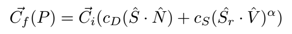Where V is the vector from the point P to the viewer, Sr is the reflection (in the normal) of a vector from the light source to P, and α is the shininess. We also have two new constants, cD and cS, to control the relative strengths of the diffuse and specular light from the object. We can now generate images such as this one:
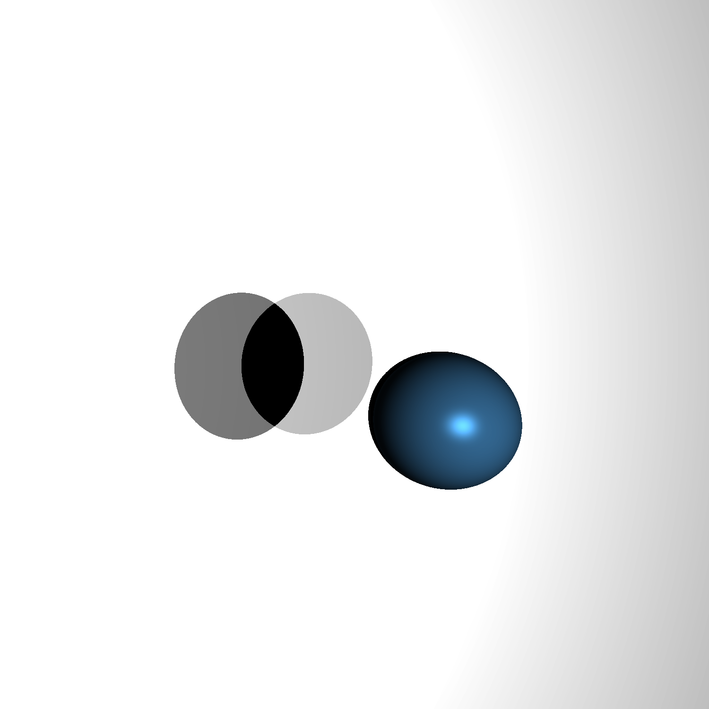Note that there are two light sources, so there should be two specular highlights on the blue sphere. In this case, the sources are so close together that their individual highlights look like one.
Although these images are interesting, one obvious feature that limits the usefulness of the program is the fact that all of the objects in the scene are a solid colour. It would be nice if we could make some of the objects, at least, have different colours at different points. In other words, we want to apply texture images to them.
Texture Mapping
Texture mapping involves taking the pixels from an image (such as a png or jpg) and applying the colours of those pixels at corresponding points on an object. To do this, we need a mapping between the points on the object and the points in the image (which form part of a plane). This leads to mildly complicated maths in the case of spheres, and mapping textures to them wasn't the main goal of this project, so I did not implement textures for spheres. For planes, however, the process of texture mapping is relatively straightforward.
Suppose we have two points on the plane, p1 and p2. We can define a vector that is parallel to the plane by subtracting one point from the other. Call this vector v1. Taking the cross product of this vector with the plane's normal vector gives another vector parallel to the plane, v2, that is perpendicular or orthogonal to v1. Normalising both of these vectors gives us what is called an "orthonormal basis" for the points in the plane. Simply put, they allow us to define a coordinate system for the plane. Let p1 be the origin of this system. Then, we can express the position of any point in the plane, *relative* to p1, as a combination of the two vectors v1 and v2. This coordinate system allows us to assign a point from a texture image to each point in the plane. We then use the colour model described above to shade the plane. The only difference is that the Ci used is now different for each point in the plane, whereas it was constant before. After taking all this into account, we can make more complex images:
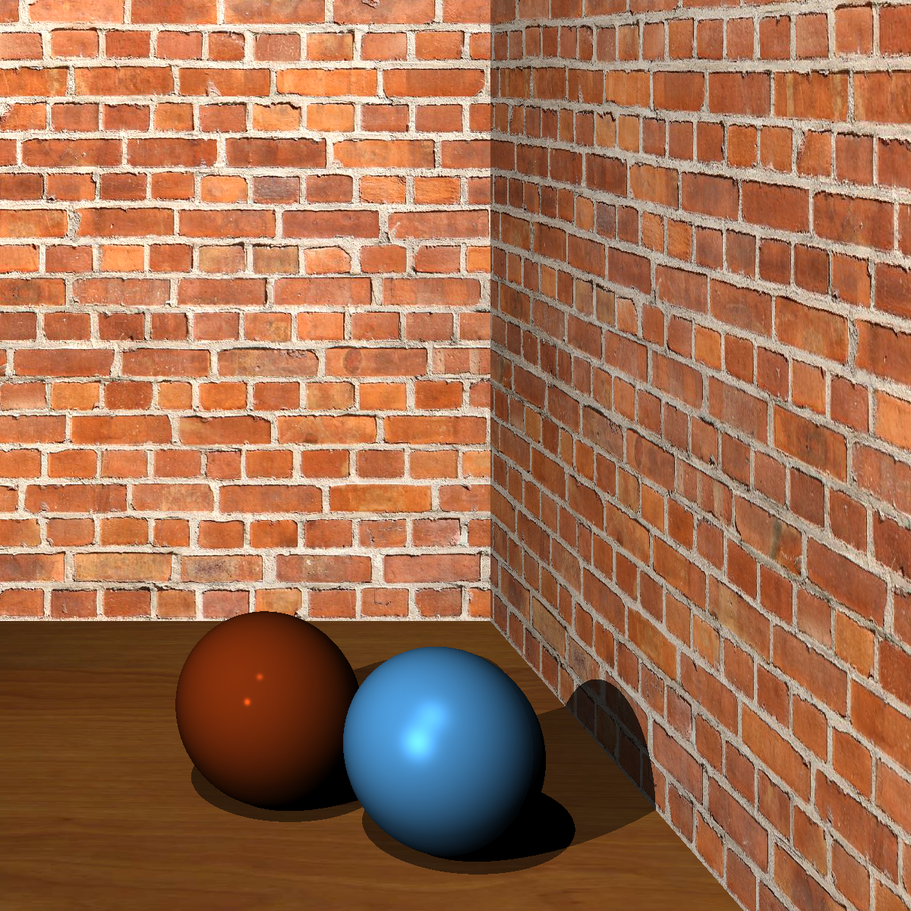Reflections
From a physics point of view, it would be interesting to simulate a property of light that most people are familiar with: reflections. These are reflections in which the reflecting object allows the light ray to bounce perfectly off the surface, without scattering taking place. This is what allows us to see ourselves in a mirror or in puddles, for example. We have only dealt with reflection from light sources up to now. But we also want to be able to reflect light from other objects.
To do this, every time a ray hits a reflective object, we can reflect that ray in the normal at the object surface, then see what the reflected ray hits too. If that reflected ray hits *another* reflective object, we reflect it again, up to a certain limit to prevent crashing. Once this recursive process of reflections is done, we add up the colour contributions of every object involved. This allows us to see the reflections of all those objects in the original one that we hit.
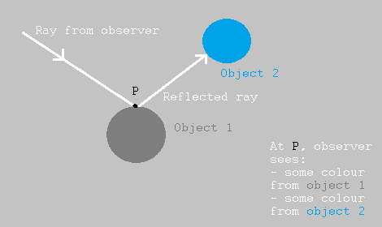Taking this into account, we can now have scenes with mirrors. This can be used to simulate results from optics using spherical mirrors. For example, a sphere that is inside the focus of a concave mirror can generate a magnified virtual image:
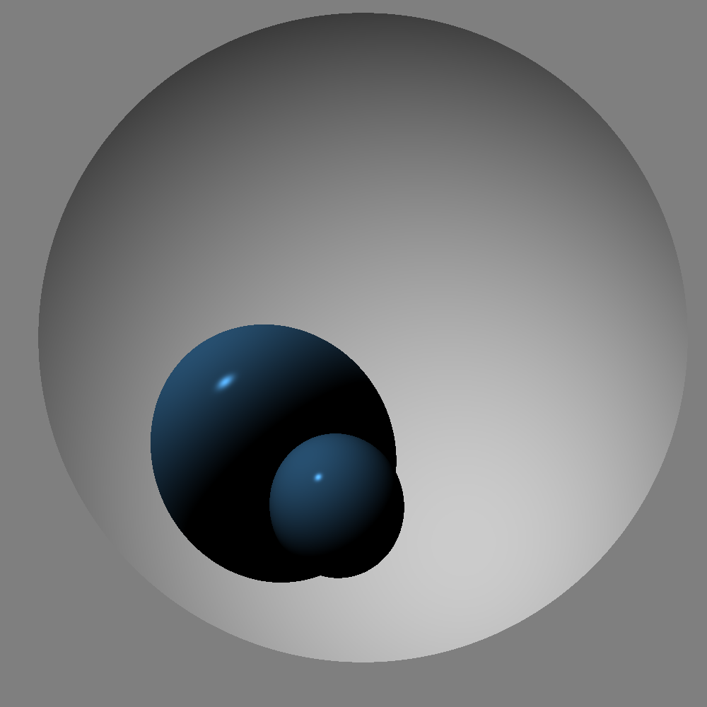The concave mirror in the image above is a "slice" of a sphere, which is formed by taking a sphere and cutting it with a plane, only rendering points that are "inside" the plane. We can see that the small blue sphere is reflected in such a way that the image looks much bigger than the original object.
We can even allow the light to reflect many times, up to a specified limit, letting us simulate the "infinite mirror" effect that we can see whenever two mirrors are put facing each other.
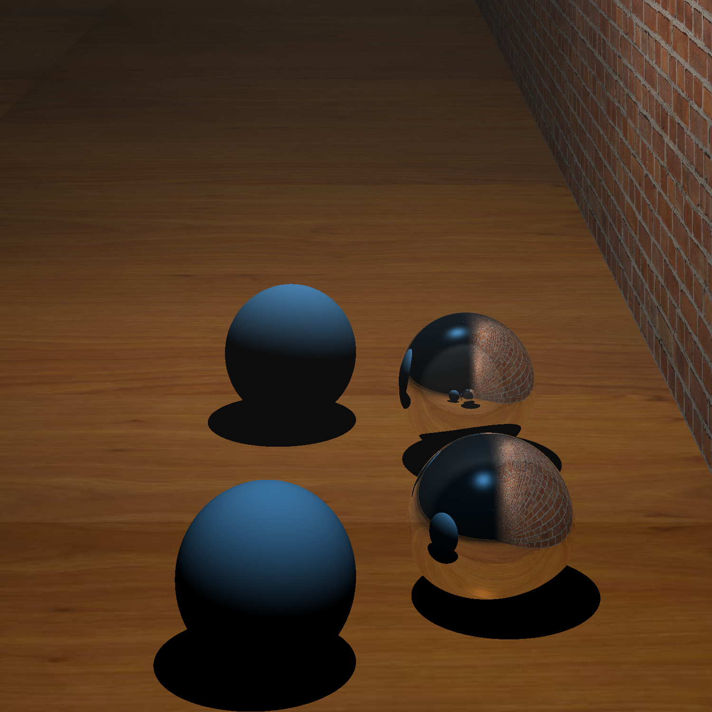In the picture above, we can see that the mirror sphere reflects its own image, thanks to the plane mirror right next to it. The same thing happens in this image:
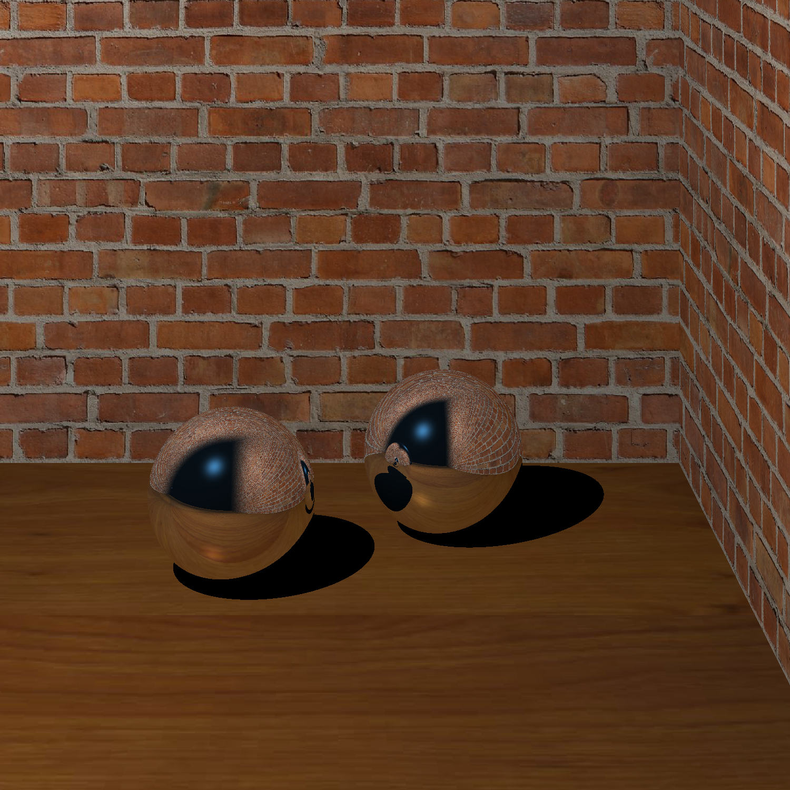Overall, using raytracing to render a scene can take a long time. However, it is clear that it can be extremely useful, especially to simulate reflections in a way that looks natural. The techniques used in this project could be extended, e.g. to implement texture mapping for spheres, which would allow for space scenes with planets and moons. Rendering more complicated shapes would also be interesting.